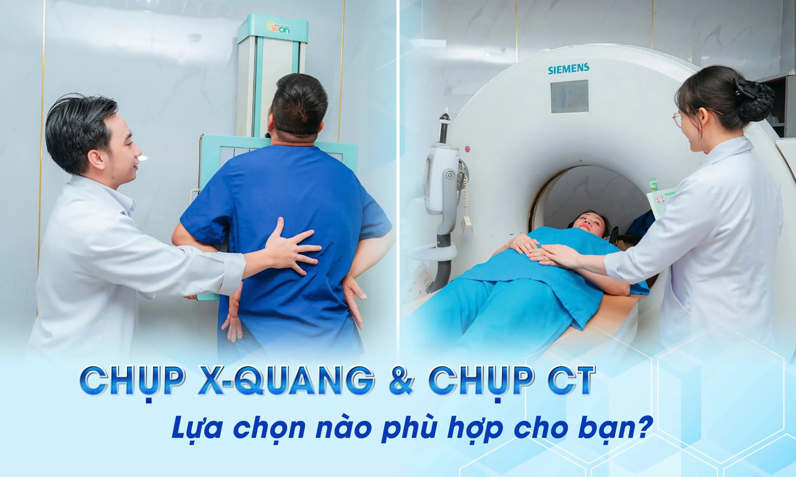
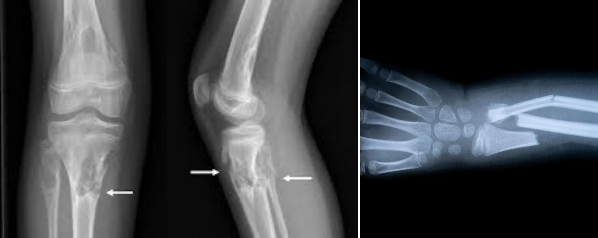
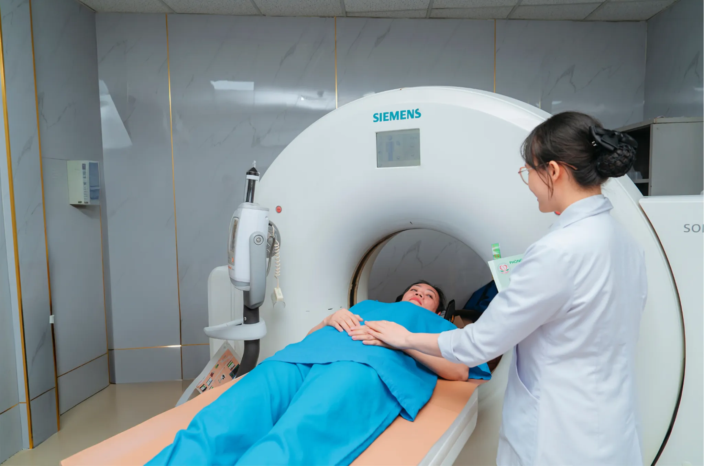
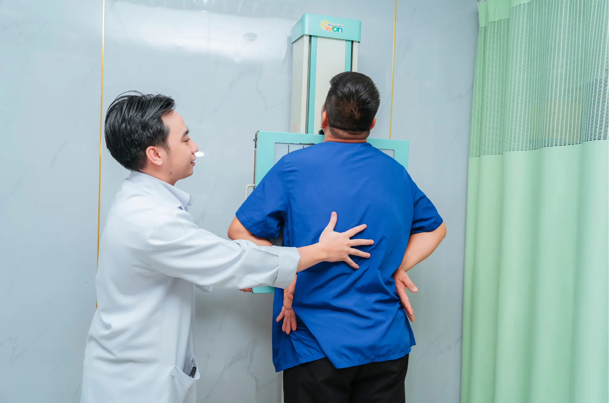
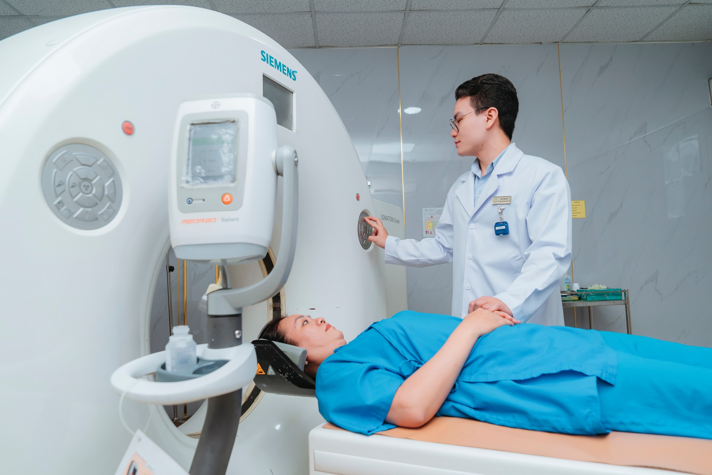

X-Quang và CT Khác Nhau Gì? So Sánh Chi Tiết 2025
Mỗi ngày tại TP.HCM, hàng nghìn người đặt câu hỏi: "X-quang và CT khác nhau như thế nào?" và "Nên chụp X-quang hay CT Scanner?". Đây là những thắc mắc phổ biến nhất về chẩn đoán hình ảnh mà Phòng Khám Đại Phước nhận được. Bài viết này sẽ so sánh X-quang và CT một cách chi tiết, giúp bạn lựa chọn đúng phương pháp chẩn đoán hình ảnh phù hợp nhất cho tình trạng sức khỏe của mình.
X-Quang và CT là gì? Tổng quan về 2 phương pháp chẩn đoán hình ảnh phổ biến
X-Quang (X-ray) - Công nghệ cơ bản nhưng hiệu quả
X-quang sử dụng tia X xuyên qua cơ thể để tạo hình ảnh 2D trên phim hoặc màn hình số. Được phát minh năm 1895, đến nay X-quang vẫn là phương pháp chẩn đoán hình ảnh phổ biến nhất thế giới và được sử dụng rộng rãi tại các phòng khám TP.HCM, bao gồm Phòng Khám Đại Phước.
Ưu điểm thông thường:
-
Là kỹ thuật đơn giản, dễ thực hiện.
-
Thời gian thực hiện nhanh .
-
Cho ra kết quả nhanh chóng.
-
An toàn hầu hết mọi người ( thận trọng với trẻ em và phụ nữ có thai).
-
Hầu như không thấy tác dụng phụ.
Hạn chế:
-
Cho hình ảnh không chi tiết bằng CT, MRI (có sự chồng lấp nhiều cầu trúc , có thể bỏ sót tổn thương)
-
Ít có giá trị với tổn thương mô mềm.
-
Sử dụng tia xạ ( nguy cơ rất thấp nếu quản lý đúng cách).
CT Scanner - Công nghệ chụp cắt lớp vi tính
CT Scanner là phương pháp chụp cắt lớp vi tính sử dụng tia X chiếu vào cơ thể thông qua xử lý của máy tính tạo ra hình ảnh (2D, 3D) cung cấp nhiều thông tin chi tiết hơn so với X-quang thông thường. Khi so sánh X-quang và CT, CT Scanner có khả năng phát hiện tổn thương nhỏ hơn và cho hình ảnh rõ nét hơn.
LỊCH SỬ PHÁT TRIỂN CỦA MÁY CT VÀ ƯU ĐIỂM :
1. CT THẾ HỆ 1:
-
CT thế hệ 1 là CT đơn dãy sử dụng 1 đầu dò duy nhất, chùm tia hẹp song song. Quá trình chụp diễn ra chậm chủ yếu dùng cho các bộ phận tĩnh như xương và sọ não.
-
Ưu điểm là hình ảnh rõ nét hơn X-quang nhưng thời gian chụp lâu đến vài giờ. Hiện nay không dùng nữa.
2. CT THẾ HỆ 2:
-
Sử dụng chùm tia x rẻ quạt và 20-30 đầu dò để quét cơ thể kết hợp phương pháp dịch chuyển song song và tinh tiến để tối ưu hóa việc sử dụng tia x
-
Thời gian nhanh hơn thế hệ 1, cho phép chụp nhiều lát cắt trong thời gian ngắn.
-
Sử dụng tia x hiệu quả , tăng khả năng chẩn đoán hơn , hình ảnh chất lượng hơn , chi tiết hơn.
-
Đánh giá tốt mức độ tổn thương chấn thương, tai nạn và bệnh lý khác.
3. CT THẾ HỆ 3:
-
Máy chụp cắt lớp vi tính đa dãy,cấu tạo với số lượng đầu dò lớn, được bố trí trên vòng cung và cố định với bóng X-quang.
-
Tốc độ chụp nhanh vài giây trong 1 lát cắt nhờ chuyển động quay liên tục của hệ thống đo.
-
Chùm tia x rẻ quạt phát ra góc 30-60 độ , giúp tối ưu hóa việc sử dụng tia x .
-
Chẩn đoán nhiều tổn thương và bệnh lý : chấn thương, bệnh lý tim mạch,bệnh lý thần kinh,ung thư , đánh giá tổn thương sau phẫu thuật, tầm soát bệnh.
4. CT THẾ HỆ 4:
-
Có sự khác biệt so với thế hệ trước bóng đèn x quang và đầu dò cảm biến được tách rời giúp tăng tốc độ chụp và giảm nhiễu ảnh.
-
Thời gian chụp chỉ mất vài giây, hình ảnh chi tiết rõ nét hơn các thế hệ trước,loại bỏ hiện tượng nhiễu ảnh tròn, hỗ trợ đắc lực cho việc chẩn đoán, giúp chẩn đoán chính xác hơn.
-
Giam liều bức xạ , đảm bảo an toàn cho bệnh nhân với liều xạ được kiểm soát.
-
Chẩn đoán bệnh lý xương , khớp, phổi ,gan , thận ,não và các cơ quan khác trong cơ thể.
-
Phát hiện u, viêm nhiễm, tổn thương mô mềm và bất thường khác.
-
Hỗ trợ trong quá trình phẫu thuật và can thiệp y tế.
-
Đánh giá mức độ nghiêm trọng của bệnh và theo dõi điều trị.
Ưu điểm của CT:
-
Chụp CT liều thấp ( low dose Computed Tomography): có giá trị tầm soát ung thư phổi được sử dụng khá phổ biến hiện nay.
-
Cho hình ảnh rõ nét, cấu trúc giải phẫu chi tiết , không chồng lắp,có thể dựng hình 3D rõ ràng.
-
Hiệu quả với tổn thương xương và bệnh lý xương.
-
Cho kết quả mô mềm rõ hơn so với X-quang.
-
Thích hợp nhiều đối tượng và bệnh lý , kể cả người không chụp được MRI (người dùng van tim kim loại, người có dị vật trong cơ thể, người dùng máy trợ nhịp, người dùng máy trợ thính..)
-
Thời gian chụp nhanh.
-
Kết quả chụp nhanh.
Hạn chế:
-
Hạn chế chẩn đoán mô mềm so với MRI như cơ, gân, dây chằng.
-
Hạn chế chẩn đoán tủy sống.
-
Hạn chế chẩn đoán dây thần kinh.
-
Hạn chế chẩn đoán tổn thương đồng mật độ.
-
Chịu ảnh hưởng liều bức xạ có nguy cơ tiềm ẩn ung thư ( khả năng rất khó nếu quản lý tốt. ).
-
Tiềm ẩn rủi ro với thai nhi và trẻ nhỏ ( thận trọng chỉ định, che chắn bảo vệ cơ quan nhạy cảm).
-
Tiềm ẩn nguy cơ tác dụng phụ chất cản quang.
So sánh X-quang và CT Scanner: Ưu nhược điểm chi tiết
Khi quyết định giữa X-quang và CT Scanner, nhiều bệnh nhân tại TP.HCM thắc mắc phương pháp nào phù hợp hơn. Dưới đây là bảng so sánh X-quang và CT một cách toàn diện:
| Tiêu chí | X-quang | CT Scanner |
| Hình ảnh | 2D | 2D, 3D... |
| Độ chi tiết | Có thể có sự chồng lắp | Chi tiết, cấu trúc giải phẫu rõ ràng |
| Thời gian chụp | Rất nhanh | Nhanh (vài phút) |
| Bức xạ | Rất thấp. 0,001mSV | Cao hơn X-quang, 2mSV - 20mSV |
| Chi phí | Thấp | Cao hơn |
| Phát hiện xương gãy | Khá Tốt | Tốt |
| Phát hiện mô mềm | Kém | Tốt hơn |
| Cần chuẩn bị | Hầu như không | Có thể nhịn ăn tùy cơ quan |
Qua bảng so sánh X-quang và CT Scanner trên, chúng ta thấy rõ sự khác biệt giữa hai phương pháp chẩn đoán hình ảnh này. X-quang phù hợp cho các trường hợp cần chẩn đoán nhanh, đơn giản với chi phí thấp. Trong khi đó, CT Scanner cho hình ảnh chi tiết hơn, phù hợp cho chẩn đoán phức tạp. Tại Phòng Khám Đại Phước TP.HCM, chúng tôi trang bị đầy đủ cả hai loại máy để phục vụ nhu cầu đa dạng của bệnh nhân.
| Loại chụp | Liều bức xạ | Tương đương |
| X-Quang ngực | 0.001mSv | 3,65h bức xạ nền |
| CT đầu |
|
|
| CT ngực |
|
|
| CT bụng chậu |
|
|
X-quang hay CT: Khi nào nên chụp X-quang?
Việc lựa chọn giữa X-quang hay CT phụ thuộc vào mục đích chẩn đoán. X-quang được ưu tiên trong các trường hợp sau:
1. Xương và khớp ( chấn thương và bệnh lý)
X-quang là lựa chọn đầu tiên cho khám xương khớp tại các trường hợp:
-
Nghi ngờ gãy xương
-
Nghi ngờ bệnh lý xương .
-
Nghi ngờ tổn thương khớp.
-
Theo dõi tiến triển và sự lành của tổn thương xương khớp.

2. Bệnh lý phổi
Tại chuyên Khoa Hô hấp, X-quang phổi phát hiện tốt:
-
Viêm phổi
-
Lao phổi
-
Tràn dịch - tràn khí màng phổi
X- quang phổi chỉ định khi nghi ngờ tổn thương ở phổi và kiểm tra sức khỏe định kỳ :
-
Ho .
-
Khó thở.
-
Đau ngực.
-
Kiểm tra sức khỏe định kỳ dù không triệu chứng .
Lưu ý: X-quang phổi không phát hiện COVID-19 giai đoạn sớm.
3. Khám tổng quát
-
Kiểm tra tim phổi cơ bản
-
Sàng lọc bệnh lý
-
Khám tuyển dụng, du học
4. Nha khoa
-
Phim quanh chóp:
-
Bệnh lý tủy và mô quanh chân răng.
-
Dùng trong nội nha, nha chu và trám răng.
-
Phim toàn cảnh:
-
Khảo sát toàn bộ cung răng hai hàm, xương hàm trên, xương hàm dưới.
-
Dùng trong khám nha khoa tổng quát.
-
Phim cắn cánh :
-
Giúp nha sĩ quan sát dễ dàng về răng chuyển tiếp và răng hàm của bệnh nhân.
-
Chẩn đoán, lập kế hoạch và điều trị kịp thời bệnh lý răng miệng.
-
Phim CBCT (CONE BEAM CT):
-
Khảo sát ống tủy, xương hàm theo tái lập 3D.
-
Dùng trong nội nha, implant, chỉnh nha, phẫu thuật chỉnh hình sọ mặt.
-
Phim sọ nghiêng:
-
Khảo sát hướng phát triển xương.
-
Dùng trong chỉnh nha.
So sánh X-quang với CT: Khi nào nên chụp CT Scanner?
Trong cuộc so sánh X-quang và CT Scanner, CT được chỉ định khi cần hình ảnh chi tiết hơn hoặc trong các trường hợp cấp cứu. Cụ thể:
1. Cấp cứu đa chấn thương
CT là tiêu chuẩn vàng trong:
-
Chấn thương sọ não
-
Tai nạn giao thông nặng
-
Ngã từ cao
-
Đau bụng cấp không rõ nguyên nhân
2. Phát hiện và theo dõi ung thư
Gói Tầm soát ung thư sử dụng CT phát hiện sớm:
-
U não từ 3mm
-
Ung thư phổi giai đoạn sớm
-
Di căn xương, gan, phổi
-
Đánh giá đáp ứng điều trị
3. Bệnh lý khác:
-
Sỏi thận, sỏi mật
-
Viêm ruột thừa
-
Tắc ruột
-
Phình động mạch
4. Chuẩn bị phẫu thuật
-
Đánh giá chi tiết giải phẫu
-
Lập kế hoạch phẫu thuật
-
Kiểm tra sau phẫu thuật
Quy trình chụp X-quang:
- Tiếp nhận bệnh nhân.
- Hướng dẫn bệnh nhân thay đồ phòng khám nếu cần .
- Cởi bỏ trang sức và vật dụng khác trên người , kể cả áo ngực nếu chụp x quang phổi.
- Hướng dẫn tư thế chụp cho bệnh nhân.
- Hướng dẫn hít , thở đúng cho bệnh nhân nếu chup x quang phổi
- Trả phim.
- Gặp Bác sĩ chẩn đoán hình ảnh.
Quy trình chụp CT không tiêm thuốc CẢN QUANG:
Bước 1:
-
Bác sĩ khám ,tư vấn và cho chỉ định cơ quan phù hợp.
-
Hết sức thận trọng phụ nữ có thai và trẻ em.
-
Tháo bỏ trang sức và vật dụng khác trên cơ thể.
-
Có thể ăn nhẹ và uống nước vừa phải trước chụp 2h .
-
Trẻ em có thể dùng thuốc an thần .
Bước 2:
-
Kỹ thuật viên hướng dẫn tư thế nằm.
-
Kỹ thuật viên hướng dẫn nằm yên , có thể yêu cầu nín thở trong chụp ngực bụng.
-
Tiến hành chụp.
Bước 3: Trả kết quả sau 30-60 phút.
Quy trình chụp CT có tiêm thuốc CẢN QUANG:
1. Trước chụp:
-
Bác sĩ khám , tư vấn và cho chỉ định cơ quan cần chụp.
Lưu ý:
- Chống chỉ định tuyệt đối : dị ứng với iod và mất nước nặng.
- Chống chỉ định tương đối: suy gan, suy tim mất bù, suy thận độ III. IV, cơ địa dị ứng….
- Hết sức thận trọng với phụ nữ có thai và trẻ em.
-
Bệnh nhân được tư vấn về nguy cơ rủi ro của chất cản quang.
-
Bệnh nhân ký giấy đồng ý chụp CT có cản quang.
-
Bệnh nhân được tháo bỏ trang sức và vật dụng khác trên cơ thể.
-
Đặt đường truyền
-
Bệnh nhân có thể ăn nhẹ và uống nước vừa phải trước chụp 2h .
2. Trong chụp
- Kỹ thuật viên hướng dẫn tư thế nằm.
- Kỹ thuật viên hướng dẫn nằm yên , có thể yêu cầu nín thở trong chụp ngực bụng.
- Tiến hành chụp.
3. Sau chụp:
-
Để đường truyền và theo dõi 30 phút .
-
Trong 24h uống nhiều nước để chất cản quang đào thải ra khỏi cơ thể.
4. Trả kết quả sau 30-60 phút.

Bệnh nhân đang thực hiện chụp CT Scanner với sự hỗ trợ của kỹ thuật viên chuyên nghiệp tại phòng khám hiện đại
An toàn bức xạ
Nguyên tắc ALARA
"As Low As Reasonably Achievable" - Sử dụng liều bức xạ thấp nhất có thể mà vẫn đạt chất lượng chẩn đoán.
Các biện pháp bảo vệ:
-
Che chắn bằng chì
-
Tạp dề chì cho vùng bụng
-
Cổ chì bảo vệ tuyến giáp
-
Kính chì cho mắt
-
che chắn cơ quan sinh dục nhất trẻ em.
-
-
Giảm liều chiếu
-
Công nghệ điều chỉnh tự động
-
Protocol riêng cho trẻ em
-
Giới hạn vùng chụp
-
Nhóm cần thận trọng:
QUY TRÌNH CHỤP X QUANG VÀ CT CỦA PHỤ NỮ CÓ THAI:
Quy trình chụp X quang và CT cho thai phụ cần hết sức thận trọng và chỉ thực hiện khi thật sự cần thiết và có chỉ định của bác sĩ.
-
Thăm khám và tư vấn kỹ lợi ích cũng như rủi ro của x quang , ct đặc biệt ảnh hưởng thai thai .
-
Bảo vệ thai nhi :áo chì che chắn vùng bụng, ngực,bộ phận nhạy cảm khác, giảm liều bức xạ cho thai nhi.
-
Thai phụ có thể nhịn ăn , cởi bỏ trang sức, vật dụng khác.Nếu có dùng thuốc cản quang thì phải tư vấn rủi ro tác dụng phụ của thuốc cản quang
-
Tư thế chụp: kỹ thuật viên hướng dẫn tư thế chụp vừa rõ nét vừa giảm liều tia
-
Kiểm soát liều lượng và thời gian đảm bảo an toàn cho thai nhi.
-
Theo dõi sau chụp.
QUY TRÌNH CHỤP X QUANG CHO TRẺ EM:
-
Thăm khám và tư vấn :bác sĩ thăm khám và tư vấn cho phụ huynh về lợi ích cũng như rủi ro của việc chụp x quang và ct , cũng như có biện pháp bảo vệ trẻ.
-
Bảo vệ trẻ:áo chì che chắn bộ phận nhạy cảm của trẻ : tuyến giáp, mắt và cơ quan sinh dục.
-
Tư thế chụp:kỹ thuật viên hướng dẫn tư thế chụp phù hợp cho trẻ.Có thể có sự giúp đỡ của phụ huynh,
-
Kiểm soát liều lượng và thời gian:chỉnh phù hợp với tuổi và cân nặng.
-
Giải thích và trấn an : giải thích rõ ràng cho trẻ em và phụ huynh về quy trình chụp x quang giúp trẻ em hợp tác và giảm bớt lo lắng.
Các câu hỏi thường gặp
1. Chụp X-quang/CT có đau không?
Chụp x quang và ct không gây ra đau đớn nhưng có thể có nguy cơ nhiễm xạ và tác dụng phụ của thuốc cản quang
Nhiễm xạ có thể làm đau đầu, mạch nhanh , hay rối loạn tiêu hóa… chỉ cần nghỉ ngơi và ăn uống đầy đủ nhiễm xạ được thải trừ.
Tác dụng phụ của chất cản quang : buồn nôn, đau đầu chóng mặt, dị ứng từ nhẹ ngứa phát ban đến nặng gây shock : nên luôn được bác sĩ khai thác tiền căn dị ứng và theo dõi khi chụp có cản quang .
2. Thai phụ chấn thương có chụp được x quang hay ct không ?
Khám lâm sàng :
Khám tổng quát: đánh giá tình trạng toàn thân.
Khám sản khoa : đánh giá tình trạng thai nhi, tử cung và bất thường thai kỳ
Khám vết thương : vị trí và tình trạng vết thương.
Chẩn đoán hình ảnh :
Siêu âm :
Siêu âm efast : đánh giá tình trạng tràn máu màng phổi, chèn ép tim, dịch ổ bụng.
Siêu âm đánh giá thai: nhau bong non , lượng nước ối, tim thai , suy thai.
Siêu âm đánh giá tử cung : vỡ tử cung, đánh giá lượng máu đến tử cung và thai.
X-quang: chỉ định khi có nghi ngờ gãy xương, thận trọng và che chắn kỷ bảo vệ thai nhi .
CT : Chỉ định khi nghi ngờ tổn thương nội tạng.
Xét nghiệm khác: Đánh giá tình trạng mất máu, nhiễm trùng và liên quan chấn thương.
Theo dõi tim thai liên tục bằng monitor để đánh giá tình trạng thai và suy thai.
Đánh giá mức độ chấn thương và ảnh hưởng của thai nhi:tùy vào tình trạng sức khỏe của thai nhi và của sản phụ mà có thái độ xử trí cho phù hợp.
3. Cần chuẩn bị gì trước khi chụp?
- Chụp X Quang thông thường thì không cần chuẩn bị gì trước.
- Chụp CT một số trường hợp có thể nhịn ăn.
4. Kết quả có ngay không?
Kết quả chụp X-quang thường bệnh nhân sẽ nhận ngay sau vài phút. Kết quả chụp CT thường có sau 1 tiếng, nhưng có thể lâu hơn nếu cần hội chẩn.
5. BHYT có thanh toán không?
BHYT có chi trả tuỳ vào từng chỉ định. Mọi thắc mắc, vui lòng liên hệ hotline để được tư vấn: 1900 599 941 - 0938 829 831.
6. Chụp bao nhiêu lần là an toàn :
Số lần chụp tuỳ vào cơ quan và tình trạng bệnh của bệnh nhân, bác sĩ chuyên khoa sẽ quyết định.
7. Sao CT đắt hơn X-quang nhiều vậy?
CT đắt hơn X-quang chủ yếu liên quan công nghệ và khả năng cung cấp hình ảnh chi tiết rõ ràng hơn giúp phát hiện tổn thương sớm, nhỏ , và bệnh giúp chẩn đoán bệnh chính xác hơn.
8. Có thể xem kết quả online không?
Kết quả có thể xem trực tuyến ngay trên website của phòng khám. Truy cập link sau, để xem hướng dẫn chi tiết: https://phongkhamdaiphuoc.vn/vn/huong-dan-xem-ket-qua-kham-benh.html
Bác sĩ chuyên khoa hình ảnh đọc kết quả CT scan não bộ trên màn hình máy tính tại phòng khám
Tips chọn đúng phương pháp:
-
Nghe lời bác sĩ: Họ hiểu rõ tình trạng của bạn và biết khi nào cần X-quang hay CT
-
Đừng đòi chụp CT: Không phải đắt tiền bằng tốt hơn, phù hợp mới quan trọng
-
Hỏi khi chưa hiểu: Bạn có quyền biết tại sao cần chụp X-Quang hoặc CT
-
Giữ kết quả cũ: Để so sánh tiến triển bệnh qua các lần khám
Khi nào nên đến Phòng Khám Đại Phước?
- Cần so sánh X-quang và CT để chọn phương pháp phù hợp
- Muốn được tư vấn chi tiết về chẩn đoán hình ảnh
- Cần dịch vụ chụp X-quang, CT chất lượng cao tại TP.HCM
- Thắc mắc về chi phí và quy trình thực hiện
Công nghệ hiện đại tại Phòng Khám Đại Phước
 
Cam kết chất lượng
An toàn tuyệt đối
-
Tuân thủ quy định an toàn bức xạ
-
Kiểm định máy định kỳ
-
Nhân viên được đào tạo
Kết quả chính xác
-
Bác sĩ chuyên khoa CĐHA
-
Double-check các ca phức tạp
-
Lưu trữ an toàn 5 năm
Dịch vụ chuyên nghiệp
-
Tư vấn tận tình
-
Giải thích kết quả rõ ràng
-
Hỗ trợ sau chụp
Đặt lịch chụp X-quang và CT Scanner tại Phòng Khám Đại Phước
Sau khi tìm hiểu về sự khác biệt giữa X-quang và CT Scanner, bạn vẫn băn khoăn không biết nên chọn phương pháp nào? Đừng lo lắng!
Tại Phòng Khám Đại Phước TP.HCM, đội ngũ bác sĩ chuyên khoa sẽ tư vấn và so sánh X-quang với CT để chọn phương pháp chẩn đoán hình ảnh phù hợp nhất cho tình trạng của bạn.
Tại sao chọn Phòng Khám Đại Phước?
- Máy X-quang và CT Scanner thế hệ mới
- Bác sĩ chuyên khoa chẩn đoán hình ảnh giàu kinh nghiệm
- Chi phí hợp lý, có hỗ trợ BHYT
- Kết quả nhanh, chính xác
- Xem kết quả online tiện lợi:
Liên hệ ngay: 1900599941 - 0938829831
Địa chỉ: 829 - 831 đường 3/2, Phường 7, Quận 11, Thành phố Hồ Chí Minh
Thời gian: 6:00 - 20:00 (T2-T7), 6:00 - 11:30 (CN)
"Chẩn đoán chính xác - Điều trị hiệu quả!"
Đừng để thắc mắc về X-quang và CT làm bạn lo lắng. Hãy đến Phòng Khám Đại Phước để được tư vấn tận tình từ các chuyên gia!

Các tin khác


ĐĂNG KÝ NHẬN BẢN TIN

Phòng Khám Đa Khoa Đại Phước
- 829 đường 3 tháng 2, Phường Minh Phụng, Thành phố Hồ Chí Minh
- 1900 599 941 - 0938 829 831
- (028) 3955 7999
- info@ytedaiphuoc.vn
-

6:00 - 11:30 (Chủ Nhật)


GPKD số : 0312023683 cấp ngày: 29/10/2012 Bởi Sở Kế Hoạch và Đầu Tư TP.Hồ Chí Minh
Đại diện: Tống Nguyễn Diễm Hồng